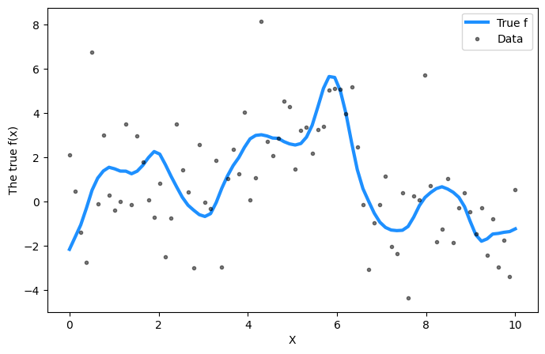
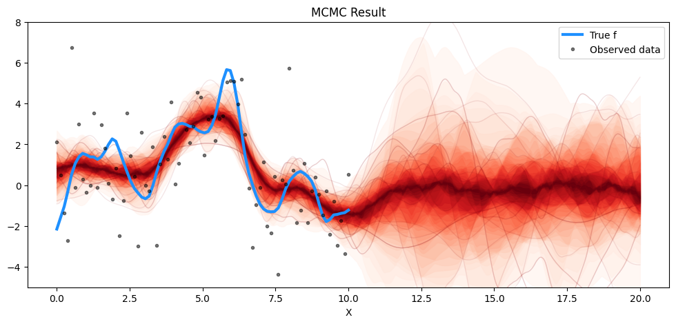

This lecture primarily will focus on Markov chain Monte Carlo as another method for hyperparameter inference. Much of the material below is based on Chapter 11 in Gelman et al [1].
Overview
MCMC is a general purpose method based on drawing samples \(\boldsymbol{\theta}\) from its prior \(p \left( \boldsymbol{\theta} \right)\), and correcting those draws to better approximate a target distribution \(p \left( \boldsymbol{\theta} | \mathbf{t} \right)\). MCMC sampling is typically carried out when it is impossible or computationally intractable to directly sample from the posterior distribution of the hyperparameters \(p \left( \boldsymbol{\theta} | \mathbf{t} \right)\).
Note that this sampling is done sequentially, although one can have parallel chains running. It is called a Markov chain, as each sample depends only on the sample drawn immediately before. The method is remarkably successful, as target distributions are improved at each simulation step, enabling it to converge to a target distribution.
The central objective is to create a Markov process whose stationary distribution is the required hyperparameter posterior \(p \left( \boldsymbol{\theta} | \mathbf{t} \right)\), and run the chains for sufficient length so as to converge to this distribution. A given set of independent sequences \(\boldsymbol{\theta}_1, \boldsymbol{\theta}_2, \ldots \boldsymbol{\theta}_{N}\) is produced by sampling randomly from a prior, and for each \(t=1, \ldots, N\), drawing \(\boldsymbol{\theta}_{t}\) from a transition distribution that only depends on the prior draw \(\boldsymbol{\theta}_{t-1}\).
Intuitively, Metropolis converges to the target distribution if:
The Markov chain is aperiodic, not transient, and can reach any state from any other state (it is irreducible).
The stationary distribution is the target distribution.
The Metropolis algorithm is a general term for a family of Markov chain simulation methods that are useful for sampling from posterior distributions. The main steps are captured below:
From the prior \(p \left( \boldsymbol{\theta} \right)\) draw a random sample \(\boldsymbol{\theta}_{0}\). Ensure that \(p \left( \boldsymbol{\theta}_{0} | \mathbf{t} \right) > 0\).
For each iterate of the chain
Sample \(\boldsymbol{\theta}_{\ast}\) from a proposal (or jumping) distribution, i.e., \[
\boldsymbol{\theta}_{\ast} \sim J_{t} \left( \boldsymbol{\theta}_{\ast} | \boldsymbol{\theta}_{t-1} \right)
\]
Calculate the ratio of the densities: \[
r = \frac{p \left( \boldsymbol{\theta}_{\ast} | \mathbf{t} \right) }{p \left( \boldsymbol{\theta}_{t-1} | \mathbf{t} \right)}
\]
One can think of the transition distribution here as being a mixture between a point mass \(\boldsymbol{\theta}_{t} = \boldsymbol{\theta}_{t-1}\) and a weighted analogue of the proposal distribution.
But intuitively, why does this work?
Consider starting at time \(t-1\). Starting with a draw from the target distribution, \(\boldsymbol{\theta}_{t-1} \sim \mathcal{N} \left(\boldsymbol{\theta} | \mathbf{t} \right)\), let us consider two possible points, \(\boldsymbol{\theta}_{p}\) and \(\boldsymbol{\theta}_{q}\). Let us assume that \(p \left( \boldsymbol{\theta}_{q} | \mathbf{t} \right) \geq p \left( \boldsymbol{\theta}_{p} | \mathbf{t} \right)\). Additionally, assume a symmetric jump distribution that transitions from \(\boldsymbol{\theta}_{p}\) to \(\boldsymbol{\theta}_{q}\)
\[
p \left( \boldsymbol{\theta}_{t}, \boldsymbol{\theta}_{t-1} \right) = p \left( \boldsymbol{\theta}_{p} | \mathbf{t} \right) J_{t} \left( \boldsymbol{\theta}_p, \boldsymbol{\theta}_q \right).
\]
As the joint distribution is symmetric, \(\boldsymbol{\theta}_{t} = \boldsymbol{\theta}_{p}\) and \(\boldsymbol{\theta}_{t-1} = \boldsymbol{\theta}_{q}\) have the same marginal distribution, as a result \(p\left( \boldsymbol{\theta} | \mathbf{t} \right)\) is the stationary distribution of the Markov chain.
Demonstration
We shall now visualize what this looks like for the case where we our target (posterior) density is a multivariate normal of the form
In a Metropolis sampler, the proposal distribution is symmetric. Thus, in the acceptance ratio, \(r\), the proposal density does not make an appearence as it cancels out from both the numerator and denominator. In Metropolis-Hastings, the proposal distribution is not symmetric as its center changes with each iteration. Therefore, we need to explicitly calculate the probability of moving from the current state to the proposed state and the reverse probability.
Therefore, the terms proposal_density(x_current, y_current, x_new, y_new) and proposal_density(x_new, y_new, x_current, y_current) are incorporated into the acceptance ratio as shown below.
Allowing asymmetric jumping rules can be helpful in increasing the speed of the sampler. We shall now demonstrate the utility of Metropolis Hastings on determining the posterior distribution of hyperparameters in a Gaussian process model. For this demonstration, we will be making use of pymc; the model shown below has been adapted from this pymc tutorial.
A Gaussian Process example
Code
import numpy as npimport pymc as pmimport matplotlib.pyplot as pltimport arviz as az
Code
# Training datan =80X = np.linspace(0, 10, n)[:, None] # Define the true covariance function and its parametersell_true =1.0eta_true =3.0cov_func = eta_true**2* pm.gp.cov.Matern52(1, ell_true)mean_func = pm.gp.mean.Zero()f_true = np.random.multivariate_normal( mean_func(X).eval(), cov_func(X).eval() +1e-8* np.eye(n), 1).flatten()sigma_true =2.0# True signal is corrupted by random noisey = f_true + sigma_true * np.random.randn(n)## Plot the data and the unobserved latent functionfig = plt.figure(figsize=(8, 5))ax = fig.gca()ax.plot(X, f_true, "dodgerblue", lw=3, label="True f")ax.plot(X, y, "ok", ms=3, alpha=0.5, label="Data")ax.set_xlabel("X")ax.set_ylabel("The true f(x)")plt.legend();

We shall use a Matern52 kernel that is parameterized by
where the hyperparameters are \(\eta\) and \(\ell\). Additionally, we will assume that the data noise is given by a Half Cauchy distribution with shape parameter \(\sigma\). For hyperparameter inference, we shall utilize both MCMC (via Metropolis
Code
with pm.Model() as model: ell = pm.Gamma("ell", alpha=2, beta=1) eta = pm.HalfCauchy("eta", beta=5) cov = eta**2* pm.gp.cov.Matern52(1, ell) gp = pm.gp.Marginal(cov_func=cov) sigma = pm.HalfCauchy("sigma", beta=5) y_ = gp.marginal_likelihood("y", X=X, y=y, sigma=sigma)with model: marginal_post = pm.sample(draws=5000, step=pm.Metropolis(), chains=1) # by default uses a Normal proposalwith model: map_post = pm.find_MAP()
Sequential sampling (1 chains in 1 job)
CompoundStep
>Metropolis: [ell]
>Metropolis: [eta]
>Metropolis: [sigma]
Sampling 1 chain for 1_000 tune and 5_000 draw iterations (1_000 + 5_000 draws total) took 11 seconds.
Only one chain was sampled, this makes it impossible to run some convergence checks
Care should be taken when plotting the posterior distribution from MCMC chains. Plotting the posterior distribution by averaging across the iterates is incorrect, and almost surely will yield a result that has a underestimated uncertainty. The correct approach is to sample across the posterior, and average those for plotting. This is clarified in the code below.
Code
# Test valuesX_new = np.linspace(0, 20, 600)[:, None]# add the GP conditional to the model, given the new X valueswith model: f_pred = gp.conditional("f_pred", X_new)with model: pred_samples = pm.sample_posterior_predictive( marginal_post.sel(draw=slice(0, 50)), var_names=["f_pred"] # using 50 samples from the chain )
Sampling: [f_pred]
100.00% [51/51 00:38<00:00]
First, we shall plot the MCMC yielded posterior.
Code
# plot the resultsfig = plt.figure(figsize=(12, 5))ax = fig.gca()# plot the samples from the gp posterior with samples and shadingfrom pymc.gp.util import plot_gp_distf_pred_samples = az.extract(pred_samples, group="posterior_predictive", var_names=["f_pred"])plot_gp_dist(ax, samples=f_pred_samples.T, x=X_new)# plot the data and the true latent functionplt.plot(X, f_true, "dodgerblue", lw=3, label="True f")plt.plot(X, y, "ok", ms=3, alpha=0.5, label="Observed data")# axis labels and titleplt.xlabel("X")plt.ylim([-5, 8])plt.title("MCMC Result")plt.legend();

And now for the MAP value:
Code
with model: mu, covar = gp.predict(X_new, point=map_post, diag=False)
It is clear that the MAP result quotes a smaller uncertainty than the MCMC result.
Notes on this iterative process
If the number of iterations is insufficient, then the chains may be unrepresentative of the target distribution.
For the same number of draws, simualtions that originate from correlated draws are less precise than independent ones.
As can be observed even above, early iterations should be discarded as the chains are warming up.
In practice, once the simulation has converged, one need not store the entire chain; simply the every \(k\)-th iterate, such that \(k\) is no more than a couple thousand. This is called thinning.
It is common practice to run multiple simulations and ensure that the variance within a sequence is much less than the variance across sequences.
To identify convergence one needs to check for stationarity and mixing. The simplest recipe to check both is to split the chains into two halves after discarding the warm up samples.
The R-hat value
For each hyperparameter, one can compute \(\beta\) and \(\omega\): the between-sequence and within-sequence variances of the MCMC chains. Consider \(m\) chains and \(n\) iterations in each chain. Define an iterate to be \(\theta_{ij}\) where \(i=1, \ldots, n\) and \(j=1, \ldots, m\). Define
which should reduce to \(1\) as \(n \rightarrow \infty\). This value is also called the Gelman-Rubin statistic.
Beyond Metropolis
It should be clear that the MCMC implementation above (i.e., Metropolis and Metropolis-Hastings) represents one strategy. There are numerous other sampling strategies
Gibbs sampler
Hamiltonian Monte Carlo (Duane et al. 1987)
No-U-Turn sampler (Hoffman and Gelman 2014)
Riemannian updating (Girolami and Calderhead 2011)